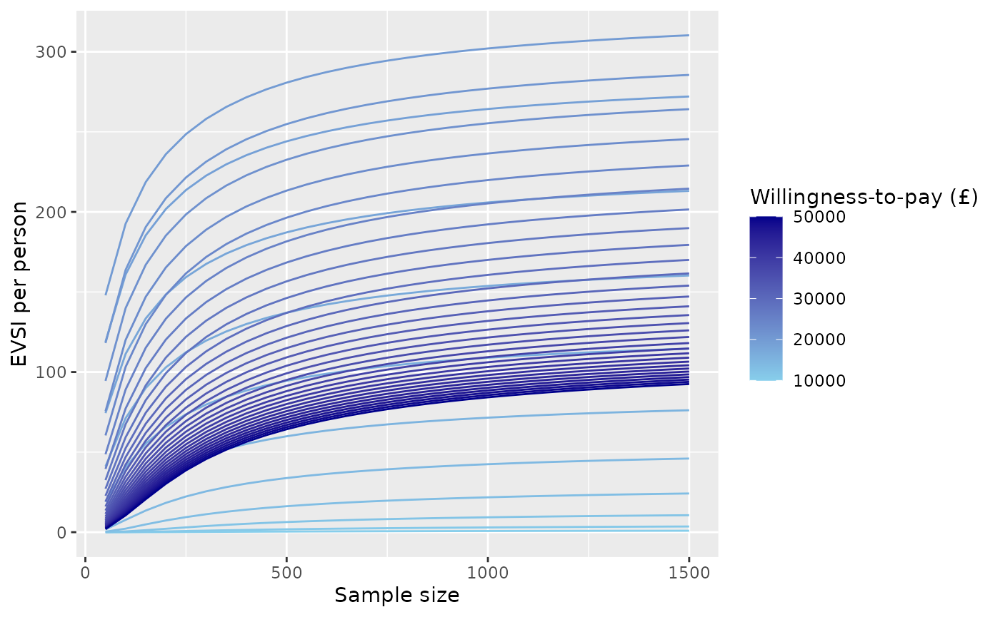
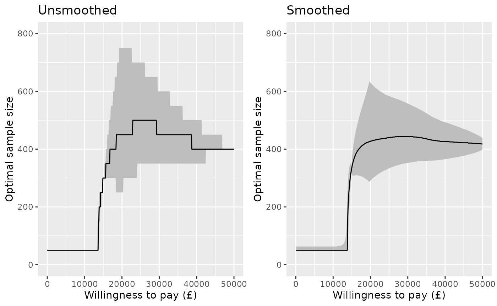

Plots of Value of Information measures
Christopher Jackson
2023-08-26
Source:vignettes/plots.Rmd
plots.RmdThe voi package functions evppi(),
evpi() and evsi() all return data frames in a
“tidy” format with one row per VoI estimate. This allows plots to be
produced and customised with little further effort using
ggplot2.
This vignette demonstrates how to illustrate VoI analyses
graphically, using an example EVSI results dataset
chemo_evsi_or supplied with the voi
package.
We also explain the use of the enbs() function to
calculate and optimise the expected net benefit of sampling for a simple
study design.
Knowledge of ggplot2 is required to be able to adapt these plots for your own analyses and communication needs, but plenty of learning resources are linked from the ggplot2 home page.
Some functions to create similar plots using base R graphics are supplied with the VoI Book.
Example EVSI dataset
The example dataset chemo_evsi_or included with the
package gives the results of an EVSI analysis for the chemotherapy
example model.
This object is a data frame with 15030 rows and three columns, giving
the sample size per arm (n, from 50 to 1500),
willingness-to-pay (k, from 10000 to 50000 pounds) and the
corresponding EVSI (evsi).
head(chemo_evsi_or)## n k evsi
## 1 50 0 0
## 2 50 100 0
## 3 50 200 0
## 4 50 300 0
## 5 50 400 0
## 6 50 500 0Sidenote: The EVSI in this example is the expected value of a two-arm trial with a binary outcome of whether a patient experiences side-effects. The trial is only used to inform the log odds ratio of side effects between treatments, and information about the baseline risk of side effects is ignored. Source code for generating this dataset using the moment matching method in
evsi()is provided here.
For reference, we also calculate the EVPI for the corresponding
willingness-to-pay values, using output from probabilistic analysis of
the decision model, as stored in the object chemo_cea_501
provided with the voi package.
evpi_df <- evpi(outputs = chemo_cea_501)We also extract the values of the EVPPI (for the log odds ratio) into
a data frame of the same format. These EVPPI values are already stored
in chemo_evsi_or, because they had been calculated as a
by-product of the moment matching method to calculate EVSI.
evppi_df <- attr(chemo_evsi_or, "evppi")EVSI curves
The following ggplot code produces curves of EVSI
against willingness to pay, with different sample sizes shown by curves
of different colours. The sample size is indicated by a colour gradient.
The corresponding curves of EVPI, and EVPPI for the “focal” parameter of
interest (the log odds ratio of side effects), are also shown for
reference.
ggplot(chemo_evsi_or, aes(x=k, y=evsi, group=n, color=n)) +
geom_line() +
scale_colour_gradient(low="skyblue", high="darkblue") +
xlab("Willingness to pay (£)") + ylab("EVSI per person") +
geom_line(data=evpi_df, aes(x=k, y=evpi),
color="black", lwd=1.5, inherit.aes = FALSE) +
geom_line(data=evppi_df, aes(x=k, y=evppi),
color="darkblue", lwd=1.5, inherit.aes = FALSE) +
labs(color="Sample size") +
xlim(0,52000) +
annotate("text",x=50000,y=125,label="EVPI",hjust=0) +
annotate("text",x=50000,y=107,label="EVPPI",color="darkblue",hjust=0) +
annotate("text",x=50000,y=50,label="EVSI",color="darkblue",hjust=0)Or we can adapt the plot to only show a limited number of sample sizes, shown in a discrete legend, and customise the colour range.
n_use <- c(250, 500, 1000)
chemo_evsi_or %>%
filter(n %in% n_use) %>%
ggplot(aes(x=k, y=evsi, group=n, color=n)) +
geom_line(lwd=1.5) +
scale_colour_binned(breaks=n_use,
low = "gray80", high = "gray20",
guide=guide_legend(title="Sample size",
reverse=TRUE)) +
xlab("Willingness to pay (£)") + ylab("EVSI (per person)") +
geom_line(data=evppi_df, aes(x=k, y=evppi),
color="darkblue", lwd=1.5, lty=3, inherit.aes = FALSE) +
annotate("text", x=50000, y=130, col="darkblue", label="EVPPI", hjust=1)In a similar way, we can produce curves of EVSI against sample size, with different willingness-to-pay (WTP) values shown by curves of different colours. To reduce visual clutter, only a limited number of willingness-to-pay values are illustrated. This plot shows how the EVSI converges to the (WTP-dependent) EVPPI for the focal parameter (log odds ratio of side effects) as the sample size increases.
chemo_evsi_or %>%
filter(k %in% seq(10000,50000, by=1000)) %>%
ggplot(aes(x=n, y=evsi, group=k, color=k)) +
geom_line() +
scale_colour_gradient(low="skyblue", high="darkblue") +
xlab("Sample size") + ylab("EVSI per person") +
labs(color="Willingness-to-pay (£)")
Expected net benefit of sampling
The voi package includes a function enbs()
to obtain the expected net benefit of sampling for a proposed study of
individual participants, given estimates of EVSI. See the help page
enbs() for full documentation for this function.
The
enbs()function supposes that the costs of the study include a fixed setup cost (costs_setup), and a cost per participant recruited (costs_pp). (Note that ifndescribes the sample size per arm in a two-arm study,costs_ppis actually the cost of recruiting two people, one in each arm.) To acknowledge uncertainty, a range of costs may be supplied as two numbers. These are assumed to describe a 95% credible interval for the cost, with the point estimate given by the midpoint between these two numbers.
Additional required information includes the size of the population affected by the decision (
pop), and a discount rate (disc, by default 0.035) to be applied over a time horizontime. These may be supplied as vectors, in which case ENBS is calculated for all potential combinations of values (see below for an example).
Here is an example of calling enbs(). The result is a
data frame giving the sample size (n), willingness-to-pay
(k), and corresponding ENBS (enbs). The
standard deviation (sd) describes the uncertainty about the
ENBS estimate due to the uncertain costs. pce is the
probability that the study is cost-effective (i.e. has a positive net
benefit of sampling). The other components of this data frame are
related to the optimal sample size (as discussed
below)
nbs <- enbs(chemo_evsi_or,
costs_setup = c(5000000, 10000000),
costs_pp = c(28000, 42000),
pop = 46000,
time = 10)
nbs %>%
filter(k==20000) %>%
head()## n k enbs sd pce ind enbsmax nmax nlower nupper
## 1 50 20000 48163756 1262191 1 201 84091443 450 250 750
## 2 100 20000 63770725 1298075 1 201 84091443 450 250 750
## 3 150 20000 72116178 1355775 1 201 84091443 450 250 750
## 4 200 20000 77115463 1432655 1 201 84091443 450 250 750
## 5 250 20000 80233182 1525819 1 201 84091443 450 250 750
## 6 300 20000 82172795 1632483 1 201 84091443 450 250 750The expected net benefit of sampling for a given willingness-to-pay
can then be illustrated by filtering the nbs dataframe to
this willingness-to-pay value, then passing it to a simple
ggplot.
nbs %>%
filter(k==20000) %>%
ggplot(aes(x=n, y=enbs)) +
geom_line() +
xlab("Sample size") + ylab("Expected net benefit of sampling") +
scale_y_continuous(labels = scales::dollar_format(prefix="£")) Note the
scales::dollar_formattrick for showing large currency values tidily in the axis labels.
The same colouring techniques used above (using a group
aesthetic, with scale_colour_gradient) might also be used
to illustrate the dependence of the ENBS curve on the
willingness-to-pay.
Uncertainty around the ENBS can be illustrated by plotting quantiles
of the ENBS alongside the point estimates. These quantiles can be
derived from the point estimate (enbs) and the standard
deviation (sd) stored in the data frame that we called
nbs, assuming a normal distribution.
nbs %>%
filter(k==20000) %>%
mutate(q975 = qnorm(0.975, enbs, sd),
q75 = qnorm(0.75, enbs, sd),
q25 = qnorm(0.25, enbs, sd),
q025 = qnorm(0.025, enbs, sd)) %>%
ggplot(aes(y=enbs, x=n)) +
geom_ribbon(aes(ymin=q025, ymax=q975), fill="gray80") +
geom_ribbon(aes(ymin=q25, ymax=q75), fill="gray50") +
geom_line() +
xlab("Sample size") + ylab("Expected net benefit of sampling") +
scale_y_continuous(labels = scales::dollar_format(prefix="£")) +
annotate("text",x=1100,y=85000000,label="95% credible interval") +
annotate("text",x=1250,y=70000000,label="50% credible interval")Optimal sample size
The enbs() function also estimates the optimal sample
size for each willingness-to-pay value. That is, the sample size which
gives the maximum expected net benefit of sampling. The optimal sample
size can be estimated using two alternative methods.
A simple and fast method: just pick the highest ENBS from among the sample sizes included in the
evsiobject that was supplied toenbs().A more sophisticated (but slower) method uses nonparametric regression to smooth and interpolate the ENBS estimates. This is useful if the EVSI has only been computed for a limited number of sample sizes, or if the EVSI estimates are noisy (which may happen for the regression-based method). We might judge that the ENBS is a smooth function of sample size, that we could estimate by regression on the estimates that have been computed.
Smooth interpolation
Here is a demonstration of how the regression smoothing method works.
Suppose we have computed EVSI (hence ENBS) for a limited set of sample sizes, say eight, from 100 to 800 by 100, and for a specific willingness to pay (and population size, horizon and discount rate).
The function
enbs_optis used to create from this a smoothed and interpolated dataset (here calledpreds) that contains 701 ENBS estimates, for every integer from 100 to 800. The maximum ENBS can then be found by searching through this interpolated dataset.
nbs_subset <- nbs %>%
filter(k==20000, n %in% seq(100,800,by=100))
eopt <- enbs_opt(nbs_subset, smooth=TRUE, keep_preds=TRUE)The enbs_opt function returns the maximum ENBS
(enbsmax), the optimal sample size (nmax) and
an interval estimate (nlower to nupper)
defined by the lowest and highest sample size that have ENBS within 5%
of the optimum.
eopt## ind enbsmax nmax nlower nupper
## 393 201 83950193 492 239 788The full interpolated dataset is also returned as the
"preds" attribute.
## n enbs ind enbsmax nmax nlower nupper
## 1 100 63987440 201 83950193 492 239 788
## 2 101 64128147 201 83950193 492 239 788In this graph, the eight pre-computed ENBS values are shown as points, and the 701 smoothed/interpolated values are shown on a line.
ggplot(nbs_subset, aes(x=n, y=enbs)) +
geom_point() +
geom_line(data=preds) +
xlab("Sample size") + ylab("Expected net benefit of sampling") +
scale_y_continuous(labels = scales::dollar_format(prefix="£")) +
geom_vline(data=eopt, aes(xintercept=nlower), col="blue", lty=2) +
geom_vline(data=eopt, aes(xintercept=nmax), col="blue", lty=2) +
geom_vline(data=eopt, aes(xintercept=nupper), col="blue", lty=2) +
geom_hline(data=eopt, aes(yintercept=enbsmax), col="blue", lty=2)The maximum, and the range of sample sizes whose ENBS is within 5% of this maximum, are shown as blue dotted lines.
Technical note: this uses the default spline regression model
s()from thegamfunction in themgcvpackage. The flexibility of the fitted model can be configured by setting thesmooth_dfargument to eitherenbsorenbs_opt. This is passed as thekargument to thes()function, and defaults to 6 (or the number of sample sizes minus 1, if this is lower than 6).
enbs_opt assumes a single willingness-to pay (and
population size, etc). In practice you do not need to use
enbs_opt, unless you want to check the goodness-of-fit of
the regression that is fitted. Instead you can just call
enbs(..., smooth=TRUE), and this will determine the optimal
sample size, using smoothing, for each of multiple willingness-to-pay
values (see the nbs_smoothed object below for an
example).
Note about uncertainty
In this example, there are a wide range of sample sizes within 5% of the optimum. In practice, the cheapest study, the one at the bottom of this range, might still be deemed acceptable to decision-makers. There is still a lot of unacknowledged uncertainty in this analysis, including about the costs, incident population size, decision horizon, and computational uncertainty in the per-person EVSI estimate. The location of the “exact” maximum of the curve of ENBS versus sample size might be considered a minor issue in the context of these other uncertainties.
Curve of optimal sample size
For convenience, the enbs() function also returns, as
the "enbsmax" attribute, a data frame with one row per
willingness-to-pay (k), giving the optimal ENBS
(enbsmax) the optimal sample size (nmax) and
an interval estimate for the optimal sample size (nlower to
nupper). An extract is shown here.
## ind enbsmax nmax nlower nupper k
## 1 201 84091443.3 450 250 750 20000
## 2 301 24976901.6 450 350 600 30000
## 3 401 7291455.8 400 350 500 40000
## 4 501 406604.1 400 400 400 50000This allows a plot to be drawn of the optimal sample size against willingness to pay, with an interval estimate defined by this range of “95% optimal” sample sizes. This is compared here for the two methods of determing the optimum: with and without smoothing.
p1 <- attr(nbs, "enbsmax") %>%
ggplot(aes(y=nmax, x=k)) +
geom_ribbon(aes(ymin=nlower, ymax=nupper), fill="gray") +
geom_line() +
ylim(0,800) +
xlab("Willingness to pay (£)") + ylab("Optimal sample size") +
ggtitle("Unsmoothed")
nbs_smoothed <- enbs(chemo_evsi_or,
costs_setup = c(5000000, 10000000),
costs_pp = c(28000, 42000),
pop = 46000, time = 10, smooth=TRUE)
p2 <- attr(nbs_smoothed, "enbsmax") %>%
ggplot(aes(y=nmax, x=k)) +
geom_ribbon(aes(ymin=nlower, ymax=nupper), fill="gray") +
geom_line() +
ylim(0,800) +
xlab("Willingness to pay (£)") + ylab("Optimal sample size") +
ggtitle("Smoothed")
gridExtra::grid.arrange(p1, p2, nrow=1)
Probability of a cost-effective trial
Given the uncertainty about the incident population size and decision time horizon, we might want to show how the results depend on these. This might be done using a heat map.
The next plot selects a specific willingness to pay (£20,000) and plots the probability that a study with a sample size of 400 is cost effective, i.e. the probability that the expected net benefit of sampling is positive. This is compared on a grid defined by a range of population sizes from 0 to 60000, and a range of decision horizon times from 0 to 10.
nbs <- enbs(chemo_evsi_or %>% filter(k==20000, n==400),
costs_setup = c(5000000, 10000000),
costs_pp = c(28000, 42000),
pop = seq(0,60000,length.out=50),
time = seq(0,10,length.out=50))
ggplot(nbs, aes(y=pop, x=time, fill=pce)) +
geom_raster() +
labs(fill="Probability") +
scale_fill_gradient(low="darkblue", high="white") +
xlab("Decision horizon (years)") + ylab("Incident population") +
theme_minimal()